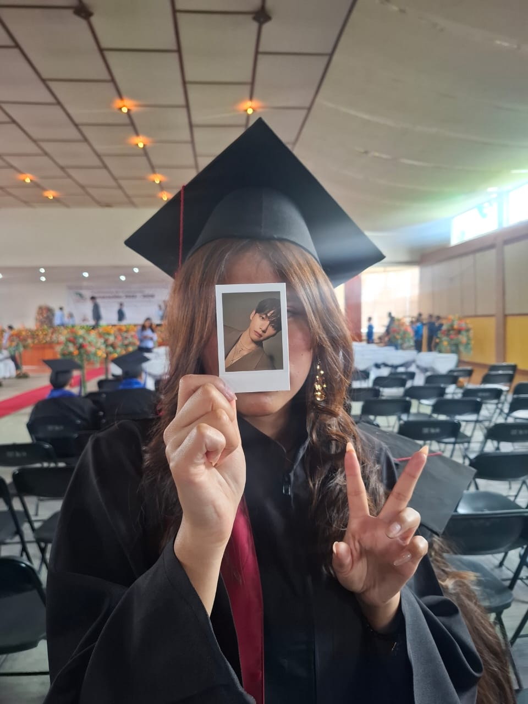
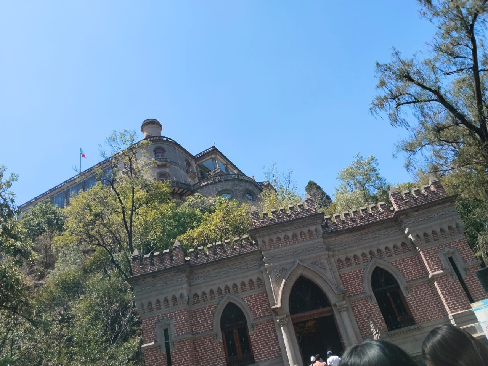
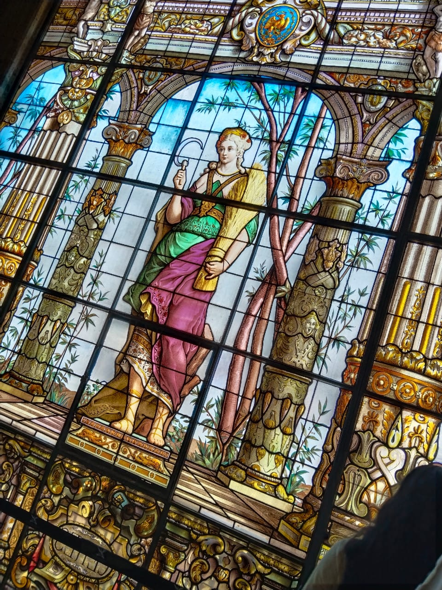
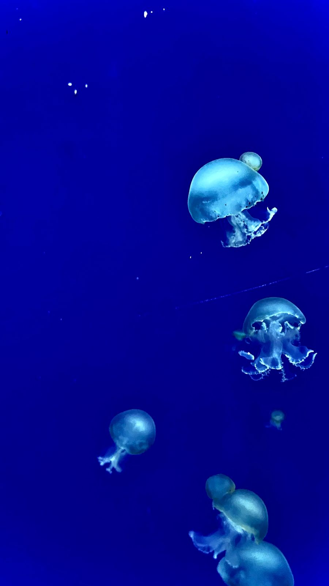
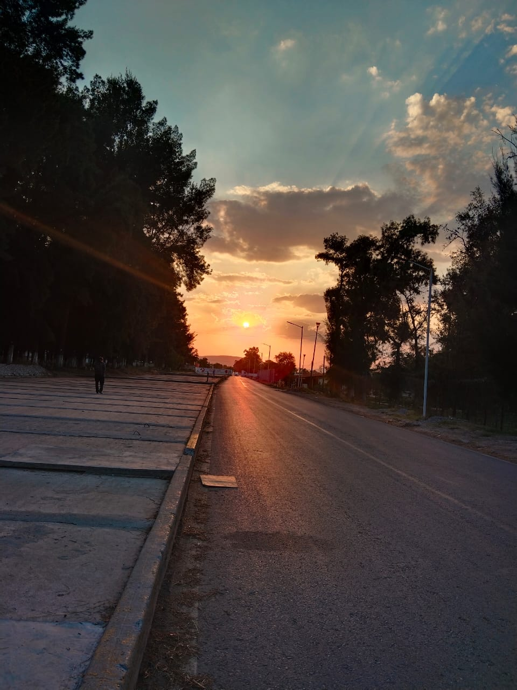
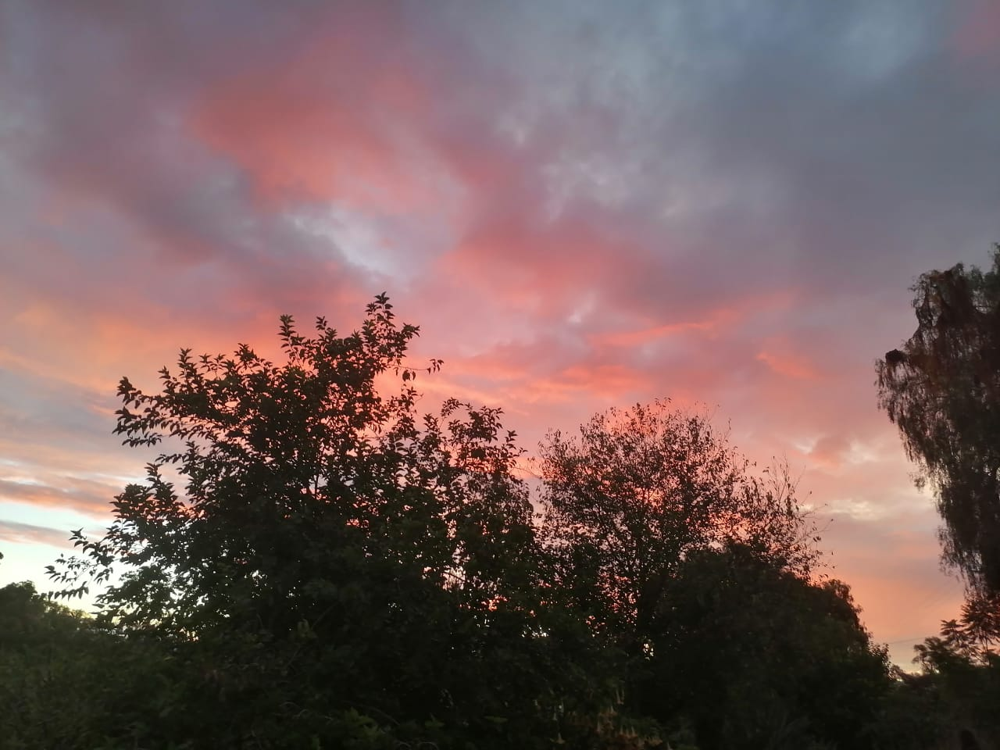

Soy Vanessa una persona tranquila, suelo estresarme con facilidad, irritarme o llorar, me gustan los gatos,las medusas y conocer nuevos lugares




Vengo del municipio de Francisco I. Madero calle framboyanes es un lugar un poco lejos pero tranquilo


Estudio tics por llego un momento que me atrajo la tecnología y todo lo que conlleva